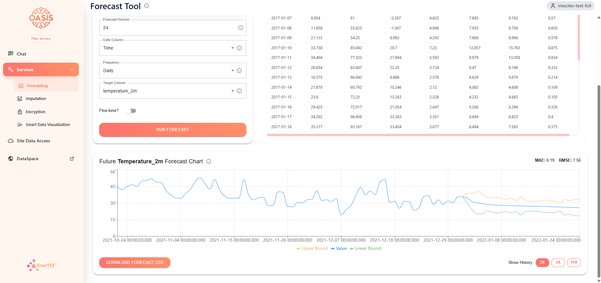
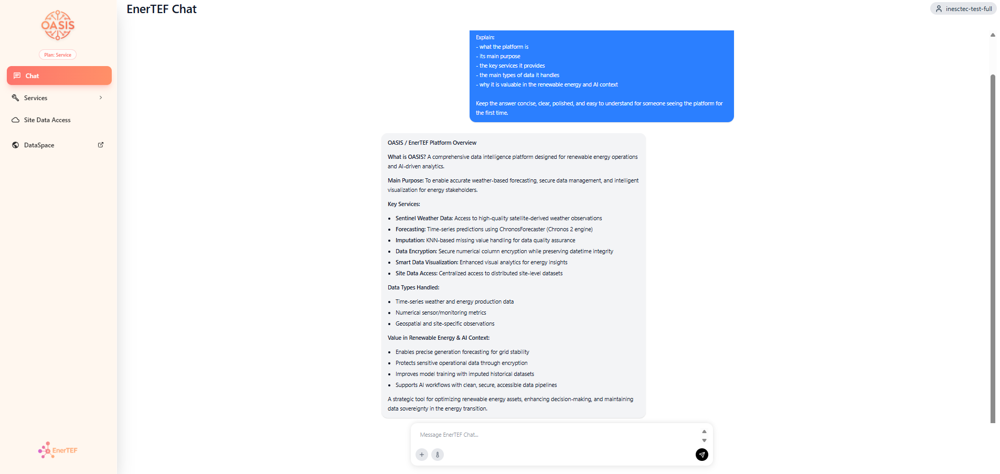

Current Role
EnerTEF - OASIS Platform
Led the technical implementation of the Portuguese node of EnerTEF, a European initiative for trustworthy AI testing and experimentation in the energy sector.
Challenge
Build a production-like platform from scratch that could expose datasets, AI services, and experimentation workflows inside a federated European environment.
What I delivered
Designed and built the platform end to end across frontend, backend, service integration, and deployment, while taking technical ownership of the Portuguese node.
- Integrated live and historical energy datasets, external APIs, time-series workflows, forecasting, and imputation services.
- Built an LLM-powered assistant for dataset discovery, service selection, job configuration, and result explanation.
- Worked across product architecture, implementation, and maintenance in a distributed multi-node environment.

